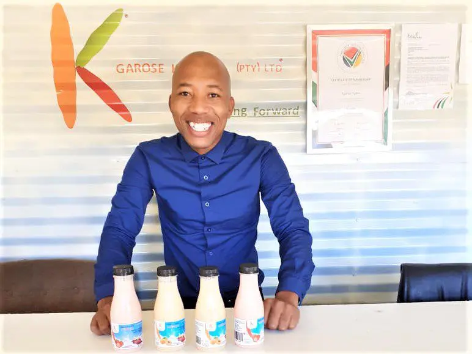
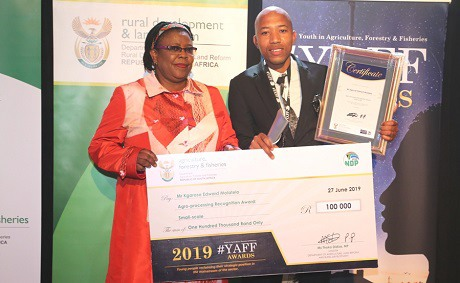
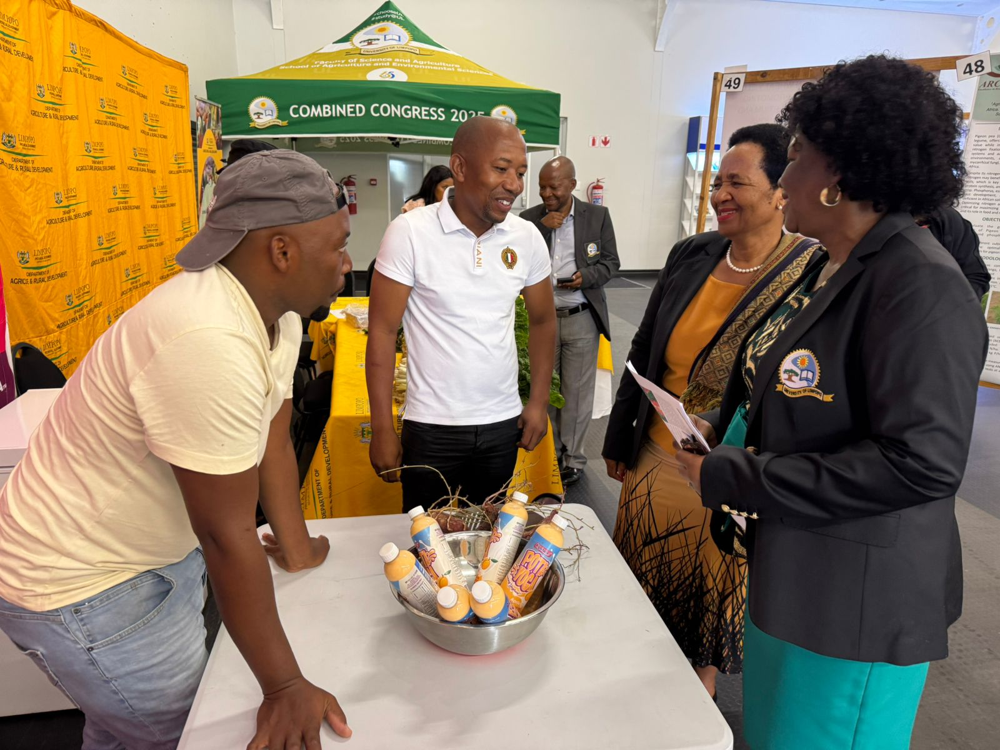
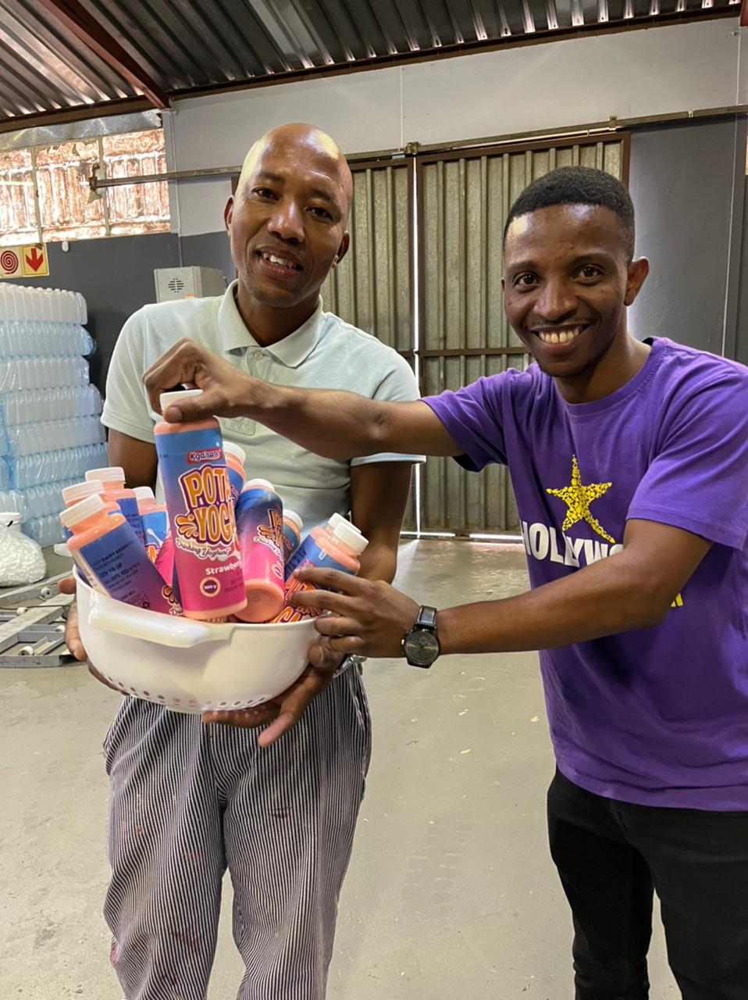

National Award for Small Scale Agro-Processing (2017)
Recognized for innovation and excellence in agro-processing.
Learn MoreWinner of SABC 1's Making Moves Season 8
Celebrated entrepreneurial spirit and innovation on a national platform.
Watch Episode
Shoprite Hustler of the Month (2019)
Edward Kgarose received R70,000 to support business growth.
Read Article

Youth in Agriculture, Forestry & Fisheries Award (2019)
Honored for contributions to sustainable agricultural practices.
View Tweet

Limpopo Department of Agriculture Recognition
Featured in an exhibition for innovative sweet potato-based products.
Read News

Hollywood Foundation Support (2022)
Provided a 500-litre oil-jacketed tank mixer to scale production and create jobs.
Learn More